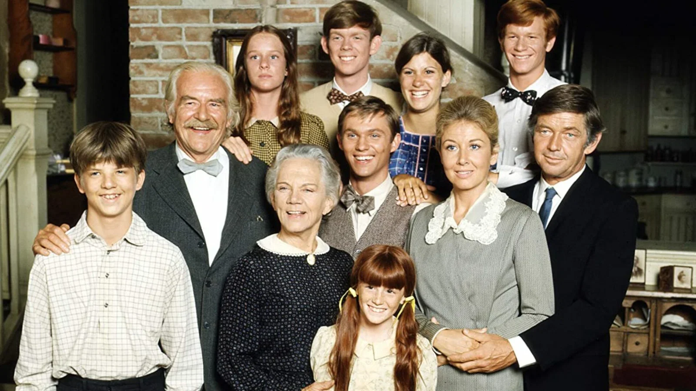

NO. 1 - WALTON FAMILY

Estimated Net Worth: $513.4 Billion
Country: United States
Main Business: Walmart
Family Background
The Walton family founded Walmart through Sam Walton, who opened the first Walmart store in 1962. The family became one of the wealthiest families because of its ownership in the global retail company.
Lifestyle Guide
- Luxury homes and private properties.
- Private travel and exclusive vacations.
- Luxury vehicles and personal collections.
- Business investments and charitable activities.
- Interests in sports and aviation.
Interesting Facts
- Walmart was founded by Sam Walton in 1962.
- The family owns a major share of Walmart.
- Walmart operates stores around the world.